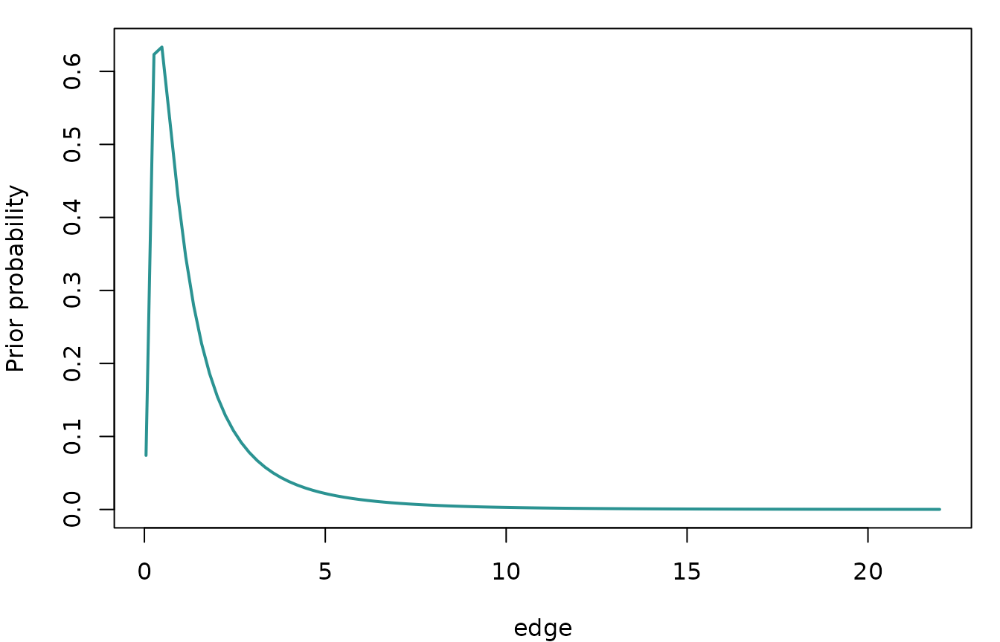
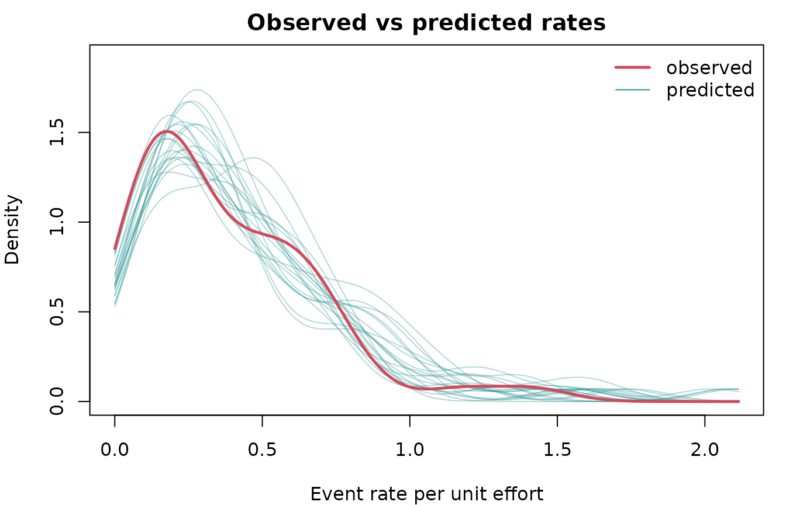
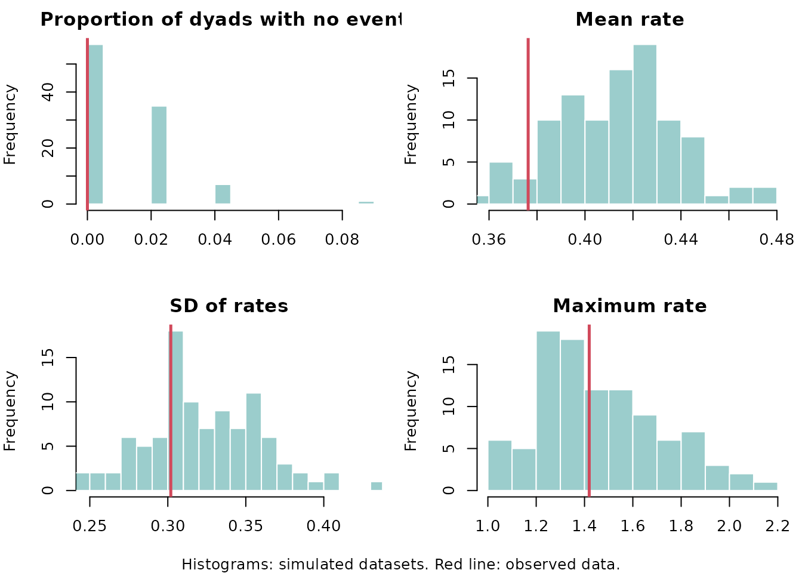
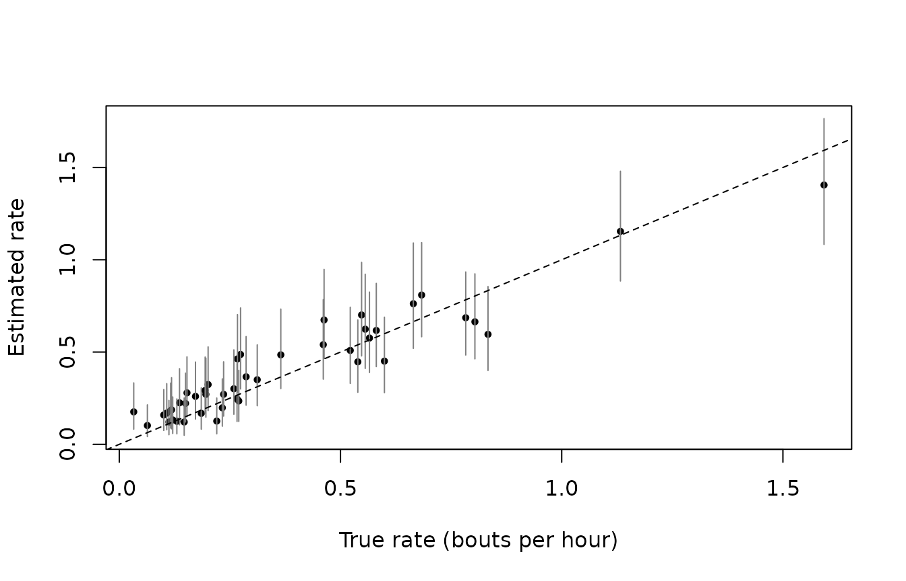
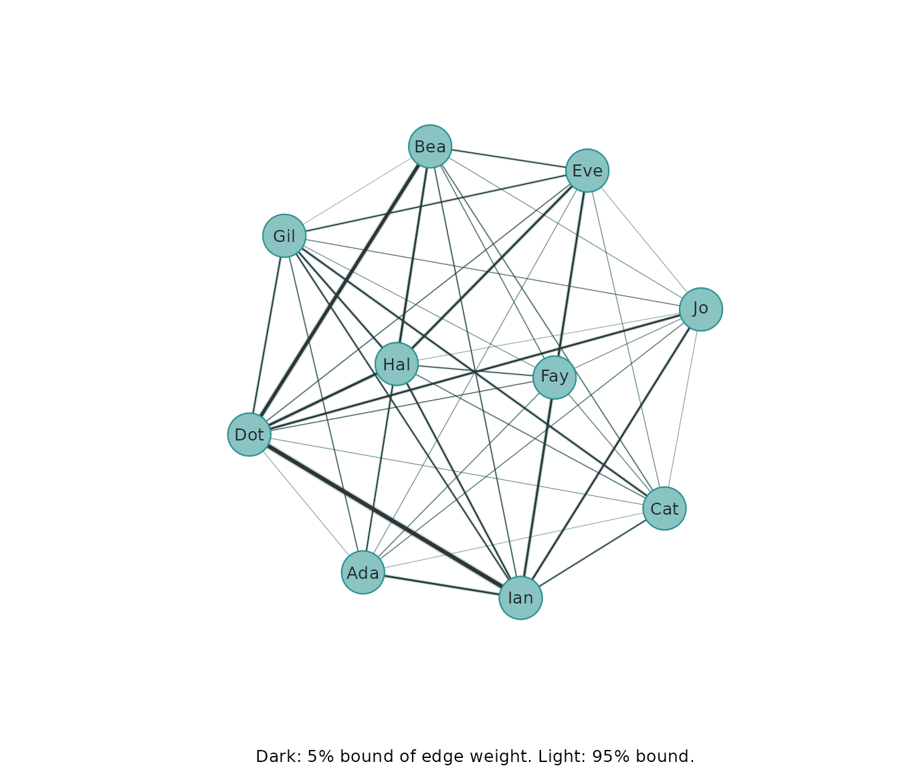

This article analyses count data, in which the number of interactions
between each pair is recorded over a known amount of observation time.
The example is grooming bouts recorded during focal follows, with
observation time in hours as the effort. See
vignette("preparing_data") for the general data format and
the choice between binary and count data.
Simulating focal follow data
We simulate focal follows of 10 individuals. Each individual is followed several times, and each follow lasts a different length of time. During a follow, every grooming bout between the focal individual and each other individual is counted. Each pair has a true rate of grooming bouts per hour, and the number of bouts seen in a follow is drawn from a Poisson distribution with mean equal to the rate multiplied by the length of the follow.
nodes <- c("Ada", "Bea", "Cat", "Dot", "Eve", "Fay", "Gil", "Hal", "Ian", "Jo")
n <- length(nodes)
sociality <- setNames(rnorm(n, 0, 0.5), nodes)
# True rate of grooming bouts per hour for each pair
dyads <- t(combn(nodes, 2))
true_rate <- exp(-1.5 + sociality[dyads[, 1]] + sociality[dyads[, 2]] + rnorm(nrow(dyads), 0, 0.8))
true_rates <- data.frame(node_1 = dyads[, 1], node_2 = dyads[, 2], true_rate = true_rate)
# Each individual is followed 8 times, for between 0.5 and 3 hours
follows <- data.frame(
follow_id = seq_len(n * 8),
focal = rep(nodes, each = 8),
hours = round(runif(n * 8, 0.5, 3), 2)
)
# One row per follow and partner
df <- merge(follows, data.frame(partner = nodes))
df <- df[df$focal != df$partner, ]
df <- df[order(df$follow_id, df$partner), ]
rownames(df) <- NULL
# Look up the true rate of each focal-partner pair (in either order)
key <- function(a, b) paste(pmin(a, b), pmax(a, b))
df$true_rate <- true_rates$true_rate[match(key(df$focal, df$partner), key(true_rates$node_1, true_rates$node_2))]
df$bouts <- rpois(nrow(df), df$true_rate * df$hours)
head(df[, c("follow_id", "focal", "partner", "hours", "bouts")])
#> follow_id focal partner hours bouts
#> 1 1 Ada Bea 2.94 2
#> 2 1 Ada Cat 2.94 0
#> 3 1 Ada Dot 2.94 0
#> 4 1 Ada Eve 2.94 1
#> 5 1 Ada Fay 2.94 0
#> 6 1 Ada Gil 2.94 1
nrow(df)
#> [1] 720Each row records the number of grooming bouts between the focal
individual and one partner during one follow. The effort,
hours, is not a whole number. Rows with no bouts are kept,
because they show that the pair were observed and did not groom.
The network is undirected, so a follow of Ada contributes to the Ada-Bea edge in the same way as a follow of Bea.
Aggregating per dyad
With no follow-level predictors, the rows can be aggregated to one
row per dyad by summing the bouts and the hours. The order of the two
individuals doesn’t matter in an undirected network, but putting them in
a consistent order means that aggregate() combines the rows
for Ada-Bea and Bea-Ada:
df$node_1 <- pmin(df$focal, df$partner)
df$node_2 <- pmax(df$focal, df$partner)
df_agg <- aggregate(cbind(bouts, hours) ~ node_1 + node_2, data = df, FUN = sum)
nrow(df_agg)
#> [1] 45
head(df_agg)
#> node_1 node_2 bouts hours
#> 1 Ada Bea 12 27.79
#> 2 Ada Cat 1 23.88
#> 3 Bea Cat 7 26.29
#> 4 Ada Dot 2 30.17
#> 5 Bea Dot 38 32.58
#> 6 Cat Dot 3 28.67For count models, the edge weight estimates only depend on the total number of events and the total effort of each dyad, so the aggregated data give the same edge weights as the disaggregated data and are faster to fit. Follow-level predictors, such as time of day, need the disaggregated data.
Edge weights are rates
In a count model, the number of events in each row is modelled with a Poisson distribution:
\[\text{events} \sim \text{Poisson}(\lambda_{ij} \times \text{effort}),\]
where \(\lambda_{ij}\) is the edge weight of dyad (i, j): the expected number of events per unit of effort. Here it is the rate of grooming bouts per hour. Edge weights are estimated on the log scale (a log link), so that the rate is always positive.
The rate depends on the units of the effort. If effort were recorded in minutes, the edge weights would be rates per minute, 60 times smaller than rates per hour, and the priors would need to change accordingly.
Priors
The default priors for the count model are:
priors <- get_default_priors("count")
priors
#> $edge
#> [1] "normal(0, 1)"
#>
#> $fixed
#> [1] "normal(0, 2.5)"
#>
#> $random_std
#> [1] "half-normal(1)"
#>
#> $zero_prob
#> [1] "beta(1, 1)"The edge prior normal(0, 1) is on the log scale.
prior_check() shows the distribution it implies for the
rate:
prior_check(priors["edge"], "count")
With effort in hours, this prior has a median of 1 bout per hour, and 95% of its probability lies between about 0.14 and 7.1 bouts per hour:
Check this against rates that are plausible for the study system and the units of effort. Here the true rates are mostly below 1 bout per hour:
quantile(true_rates$true_rate, probs = c(0, 0.25, 0.5, 0.75, 1))
#> 0% 25% 50% 75% 100%
#> 0.03270482 0.14977804 0.26619761 0.54770148 1.59289223The default prior is kept in this example. A prior with a lower mean,
such as normal(-1, 1), could be used if lower rates were
expected.
Fitting the models
The Stan model, which samples from the posterior distribution (the plausible values of each edge weight given the data and the prior) by Markov chain Monte Carlo (MCMC), uses the edge prior described above (normal on the log scale, so log-normal on the rate):
fit_count <- bison_model(
(bouts | hours) ~ dyad(node_1, node_2),
data = df_agg,
model_type = "count",
priors = priors,
seed = 1
)
#> Running MCMC with 4 parallel chains...
#>
#> Chain 1 finished in 0.2 seconds.
#> Chain 2 finished in 0.2 seconds.
#> Chain 3 finished in 0.2 seconds.
#> Chain 4 finished in 0.2 seconds.
#>
#> All 4 chains finished successfully.
#> Mean chain execution time: 0.2 seconds.
#> Total execution time: 0.5 seconds.The conjugate count model calculates the posterior distribution exactly, with a gamma prior directly on the rate:
get_default_priors("count_conjugate")
#> $edge
#> [1] "gamma(1, 1)"
fit_count_conj <- bison_model(
(bouts | hours) ~ dyad(node_1, node_2),
data = df_agg,
model_type = "count_conjugate",
priors = get_default_priors("count_conjugate")
)The two models use different priors, so their estimates differ slightly. The differences are largest for dyads with few events, such as Ada-Cat (1 bout), where the prior has more influence:
head(get_edgelist(fit_count))
#> node_1 node_2 median 5% 95%
#> 1 Ada Bea 0.451 0.280 0.689
#> 2 Ada Cat 0.121 0.049 0.251
#> 3 Bea Cat 0.301 0.163 0.512
#> 4 Ada Dot 0.126 0.057 0.251
#> 5 Bea Dot 1.154 0.885 1.480
#> 6 Cat Dot 0.159 0.075 0.297
head(get_edgelist(fit_count_conj))
#> node_1 node_2 median 5% 95%
#> 1 Ada Bea 0.439 0.264 0.678
#> 2 Ada Cat 0.068 0.014 0.192
#> 3 Bea Cat 0.280 0.146 0.478
#> 4 Ada Dot 0.087 0.027 0.205
#> 5 Bea Dot 1.161 0.877 1.494
#> 6 Cat Dot 0.124 0.046 0.260The conjugate model is enough when only the edge weights are needed. The Stan model is needed for other effects in the formula, such as fixed or random effects of follow-level variables.
Checking the model
plot_predictions() compares the observed data with data
simulated from the fitted model. For count models, the rates compared
are the number of events per unit of effort for each dyad:
plot_predictions(fit_count, num_draws = 20, type = "density")
With type = "stats", summary statistics of the observed
rates (red lines) are compared with the same statistics in simulated
datasets (histograms):
plot_predictions(fit_count, num_draws = 100, type = "stats")
For all four statistics, the observed value is within the range of the simulated values. The observed mean rate is towards the lower end of the simulated values.
The estimated network
get_edgelist() gives the posterior median and 90%
credible interval of each rate, in bouts per hour. A 90% credible
interval is the range that contains the rate with 90% probability:
edgelist <- get_edgelist(fit_count)
head(edgelist)
#> node_1 node_2 median 5% 95%
#> 1 Ada Bea 0.451 0.280 0.689
#> 2 Ada Cat 0.121 0.049 0.251
#> 3 Bea Cat 0.301 0.163 0.512
#> 4 Ada Dot 0.126 0.057 0.251
#> 5 Bea Dot 1.154 0.885 1.480
#> 6 Cat Dot 0.159 0.075 0.297Because the data were simulated, the estimates can be compared with the true rates:
idx <- match(paste(edgelist$node_1, edgelist$node_2), paste(true_rates$node_1, true_rates$node_2))
plot(true_rates$true_rate[idx], edgelist$median, pch = 19, cex = 0.6,
ylim = range(edgelist[, 4:5]),
xlab = "True rate (bouts per hour)", ylab = "Estimated rate")
segments(true_rates$true_rate[idx], edgelist[, 4], true_rates$true_rate[idx], edgelist[, 5], col = "grey50")
abline(0, 1, lty = 2)
The estimates are close to the true rates. For dyads with the lowest true rates, the estimates are mostly higher than the true values, because they are pulled towards the prior.
Rates are not bounded above by 1, so plot_network()
rescales the edge widths for count models: the widest upper bound is
drawn with width lwd, and other edges are drawn in
proportion. Widths can be compared within a plot, but not between plots
of different models:
plot_network(fit_count, lwd = 5)
The fitted model can be used with extract_metric() and
bison_brm() in the same way as a binary model. Metrics such
as node_strength are then sums of rates, and in
bison_brm() the edge weights are on the log scale. See
vignette("network_metrics") and
vignette("bison_brms").
When to use binary data instead
Count models assume that events are counted as separate occurrences and, given the edge weight, occur independently at a constant rate during observation. Binary data may be more appropriate when:
- the data record whether a behaviour occurred in each sampling period (for example, scan samples) rather than how many times;
- interactions are long and continuous, so that a single bout covers much of the observation time and bouts are difficult to count.
If the data are durations, such as the number of minutes a pair spent
grooming, convert_duration_to_binary() converts them to
binary data. It divides the duration of the behaviour and the
observation time by a fixed period length and rounds the results, giving
the number of periods with the behaviour and the number of periods
observed:
df_duration <- data.frame(
node_1 = c("Ada", "Ada", "Bea"),
node_2 = c("Bea", "Cat", "Cat"),
minutes_grooming = c(42, 0, 15),
minutes_observed = c(180, 120, 150)
)
convert_duration_to_binary(df_duration, "minutes_grooming", "minutes_observed", max_event_length = 5)
#> node_1 node_2 minutes_grooming minutes_observed
#> 1 Ada Bea 8 36
#> 2 Ada Cat 0 24
#> 3 Bea Cat 3 30The result can be fitted with a binary model, where the edge weight is the probability that the pair groomed in a 5-minute period. This conversion is an approximation, and the results depend on the period length chosen.